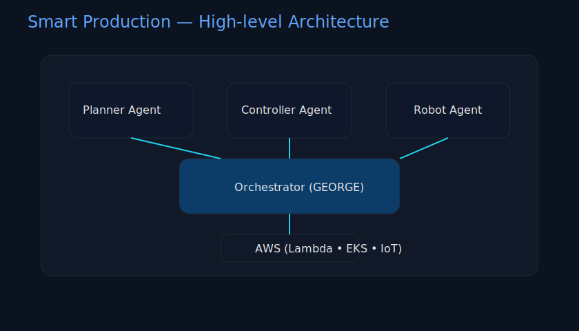

Orchestrator
GEORGE
The supervisory brain of virtauto.OS — connects Git, build systems, factory IT (MES/SCADA), data platform and UI.
Capabilities
CI/CD coordination, quality gates, retries & auto‑rollback; routing to specialized agents; least‑privilege policy & secrets handling.
Integrations
GitHub Actions/Runners, artifact storage; REST to MES/SCADA/PLC; data lake/warehouse; identity & audit.
UI & APIs
Live Status Dashboard, job/event APIs for self‑service, context assistants for devs & operators.
Architecture Overview
